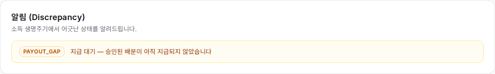
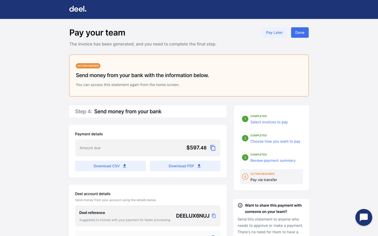
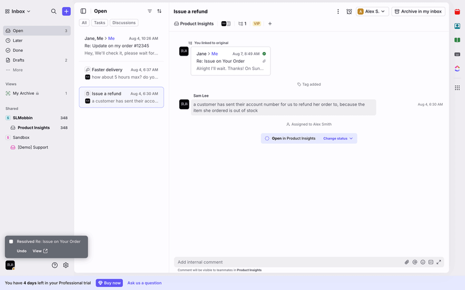
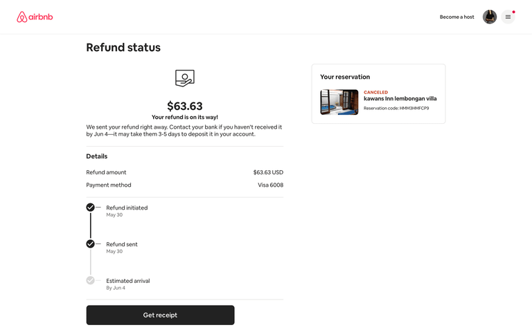

1지급 확인 요청 MVP
버튼을 누르면 사업장·근무일·승인 금액이 미리 채워진 확인 모달을 연다. 노동자는 선택 메모만 더하고 발송한다.
받는 곳 Demo Diner 급여 담당자
근무일 2026-08-15
승인액 $118.00
메모 [선택]
[ 요청 보내기 ]
노동자에게 불일치를 보여주는 데서 끝내지 않고, 사업장 급여 담당자에게 확인을 요청하고 답변과 지급 완료까지 한 화면에서 추적하는 흐름.
경고는 유형과 설명만 보여준다. 사업장, 날짜, 금액, 대기 기간, 다음 행동이 없어 노동자가 화면을 본 뒤 다시 전화·문자·이메일로 문제를 풀어야 한다.

문구 원칙: “미지급”, “체불”을 시스템이 단정하지 않는다. 지급 데이터 지연이나 매칭 실패 가능성이 있으므로 “지급 기록이 아직 확인되지 않음”을 기본 표현으로 쓴다.
버튼을 누르면 사업장·근무일·승인 금액이 미리 채워진 확인 모달을 연다. 노동자는 선택 메모만 더하고 발송한다.
발송 직후 CTA를 없애고 “8월 16일 요청 보냄”과 다음 상태를 보여준다. 반복 클릭과 불안을 동시에 줄인다.
OPEN 요청 보냄ACKNOWLEDGED 사업장 확인 중RESOLVED 지급 확인됨CLOSED_WITH_NOTE 설명과 함께 종료매니저 화면에는 일반 알림이 아니라 담당자·기한·대화가 있는 작업으로 들어간다. “지급 처리”, “이미 지급됨”, “정보 요청” 중 하나를 선택한다.
첫 요청 이후 즉시 재전송하지 않는다. 48–72시간 쿨다운 뒤에만 “한 번 더 알림”을 제공하고, 응답이 없으면 요청 타임라인을 내려받게 한다.
| 현재 상태 | 노동자에게 보이는 주 CTA | 보조 행동 |
|---|---|---|
| 승인 직후, 정상 처리 유예기간 | 지급 예정 보기 | 시프트 상세 |
| 유예기간 경과, 요청 없음 | 사업장에 지급 확인 요청 | 시프트 상세 |
| 요청 보냄 | 요청 상태 보기 | 요청 내용 복사 |
| 사업장 확인 중 | 답변 보기 | 추가 정보 보내기 |
| 지급 레코드 생성/전송 중 | 지급 상태 보기 | 거래 상세 |
| 지급 완료 | 지급 내역 보기 | 요청 닫기 |

결제 제품처럼 “무슨 일이 일어났고 다음 단계가 무엇인지”를 순서로 보여준다. PAYOUT_GAP에도 감지·요청·확인·지급 단계를 적용한다.

이메일을 보내고 끝내지 않고 요청 내용, 답변, 상태 변경을 하나의 스레드에 쌓는다. 담당자가 바뀌어도 맥락이 남는다.

금액과 이벤트 타임라인을 한 화면에 묶는다. 노동자가 “얼마가, 언제부터, 어디에서 멈췄는지” 바로 이해하게 한다.
workerId + venueId + shiftId + type. 열린 요청이 있으면 새 요청 대신 기존 상태를 반환한다.OWNER / MANAGER / PAYROLL_ADMIN 멤버다.노동자가 사업장에 요청하기 전에 24시간 “조용히 기다리기”를 선택하면, ServeProof가 예정 지급 데이터가 들어오는지 감시한다. 들어오면 알림 없이 자동 해결하고, 안 들어오면 요청 버튼을 다시 강조한다. 데이터 동기화 지연으로 생긴 불필요한 긴장을 줄일 수 있다.
참고 화면은 Lazyweb 검색 결과를 로컬에 저장해 사용했다. 전체 선별 자료: https://www.lazyweb.com/agentic-search/4b888e60-8966-42e5-af45-ea819b6d9a2a